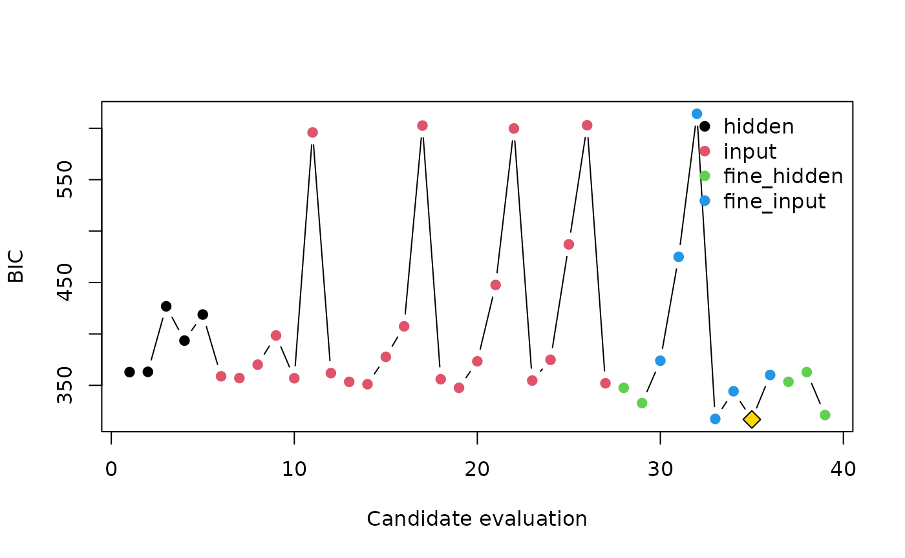

Selecting and interpreting a shallow neural network
Source:vignettes/selection-workflow.Rmd
selection-workflow.RmdThe usual statnnet workflow selects a parsimonious
network before constructing regression-style summaries. The example uses
the bundled Auto MPG data and a small search so that the vignette can be
rebuilt quickly.
library(nnet)
library(statnnet)
data("auto_mpg", package = "statnnet")
analysis_data <- auto_mpg
continuous_variables <- c(
"mpg", "displacement", "horsepower", "weight", "acceleration",
"model_year"
)
analysis_data[continuous_variables] <- scale(
analysis_data[continuous_variables]
)Select inputs and hidden-layer size
select_nnet() alternates between hidden-layer and input
selection using an information criterion. Formula terms are selected as
groups, so the indicator columns for a factor enter or leave together.
Multiple starting values are used for every candidate model; only
converged starts are eligible for selection.
selection <- select_nnet(
mpg ~ cylinders + displacement + horsepower + weight + acceleration +
model_year + origin,
data = analysis_data,
max_size = 5,
n_starts = 5,
criterion = "BIC",
maxit = 1000,
seed = 2026,
progress = FALSE
)
selection
#> statnnet model selection
#> Call:
#> select_nnet(x = mpg ~ cylinders + displacement + horsepower +
#> weight + acceleration + model_year + origin, data = analysis_data,
#> max_size = 5, n_starts = 5, criterion = "BIC", maxit = 1000,
#> seed = 2026, progress = FALSE)
#> Selected model: 6 input columns, 2 hidden units, 17 network weights
#> BIC: 316.842; 39 candidate models; 194 converged starts
#> Selected terms: displacement, horsepower, weight, model_year, origin
#> Excluded terms: cylinders, acceleration
summary(selection)
#> statnnet model-selection summary
#> Selected formula: mpg ~ displacement + horsepower + weight + model_year + origin
#> Architecture: 6-2-1; 17 weights
#> BIC: 316.842
#> Search: 39 candidates; 0 failed candidates; 1 failed starts
#>
#> Terms
#> term selected
#> displacement TRUE
#> horsepower TRUE
#> weight TRUE
#> model_year TRUE
#> origin TRUE
#> cylinders FALSE
#> acceleration FALSEThe evaluated search path is retained and can be inspected or plotted.
head(selection_path(selection))
#> evaluation phase step candidate
#> 1 1 hidden 1 size_1
#> 2 2 hidden 1 size_2
#> 3 3 hidden 1 size_3
#> 4 4 hidden 1 size_4
#> 5 5 hidden 1 size_5
#> 6 6 input 1 remove_cylinders
#> included_terms
#> 1 cylinders + displacement + horsepower + weight + acceleration + model_year + origin
#> 2 cylinders + displacement + horsepower + weight + acceleration + model_year + origin
#> 3 cylinders + displacement + horsepower + weight + acceleration + model_year + origin
#> 4 cylinders + displacement + horsepower + weight + acceleration + model_year + origin
#> 5 cylinders + displacement + horsepower + weight + acceleration + model_year + origin
#> 6 displacement + horsepower + weight + acceleration + model_year + origin
#> n_terms n_inputs size n_parameters criterion criterion_value converged_starts
#> 1 7 11 1 15 BIC 362.8806 5
#> 2 7 11 2 28 BIC 363.1365 5
#> 3 7 11 3 41 BIC 426.8388 5
#> 4 7 11 4 54 BIC 393.5217 4
#> 5 7 11 5 67 BIC 418.8539 5
#> 6 6 7 1 11 BIC 358.7954 5
#> n_starts best_start selected
#> 1 5 4 FALSE
#> 2 5 1 FALSE
#> 3 5 4 FALSE
#> 4 5 5 FALSE
#> 5 5 5 FALSE
#> 6 5 5 FALSE
plot(selection)
Check the numerical diagnostics
Converting the result with statnnet() checks the
selected nnet fit and reports whether covariance-based
summaries are numerically available. Selection is unpenalised, and a
converged fit may still have poorly conditioned curvature.
Numerical availability does not show that Wald p-values or
delta-method intervals have their nominal coverage. The Gaussian
simulations motivating the method favour parsimonious networks,
including a hidden layer no larger than the fitted input layer.
statnnet() records this comparison and warns when there are
more hidden nodes than input nodes. The inferential quantities remain
approximate and conditional on the setting studied.
The package can calculate the same summaries for supported binary-response fits, but the package authors have not established their frequentist calibration; binary Wald tests and intervals should therefore be treated as exploratory.
selected_model <- suppressWarnings(statnnet(selection))
selected_model
#> statnnet: statistical summary of a fitted nnet model
#> Formula: mpg ~ displacement + horsepower + weight + model_year + origin
#> Architecture: 6-2-1; 17 weights; n = 392
#> Response: continuous; decay: 0
#> Selection: BIC = 316.842; uncertainty is conditional on the selected model
#> nnet convergence code: 0
#> Covariance: unavailable - the penalised information matrix is not positive definiteHere we refit the selected architecture with a small, pre-specified decay to demonstrate the inferential interface. This decay value is not selected by BIC. In an analysis it should be justified and examined in a sensitivity analysis, while the resulting uncertainty remains conditional on the selected structure, penalty, and local optimum.
regularised_fit <- nnet(
selection$formula,
data = analysis_data,
size = selection$size,
linout = TRUE,
decay = 0.02,
Hess = TRUE,
Wts = selection$fit$wts,
maxit = 1000,
trace = FALSE
)
model <- statnnet(
regularised_fit,
data = analysis_data,
response = "continuous"
)
model
#> statnnet: statistical summary of a fitted nnet model
#> Formula: mpg ~ displacement + horsepower + weight + model_year + origin
#> Architecture: 6-2-1; 17 weights; n = 392
#> Response: continuous; decay: 0.02
#> nnet convergence code: 0
#> Covariance: available (reciprocal condition number 4.65e-05)
summary(model, effects = "none")
#> statnnet summary
#> Formula: mpg ~ displacement + horsepower + weight + model_year + origin
#> Response: continuous; architecture: 6-2-1
#>
#> Effect summaries: omitted
#>
#> Grouped input-to-hidden Wald summaries
#> term model_columns n_weights effective_df wald_chisq
#> displacement displacement 2 1.919229 1.379557
#> horsepower horsepower 2 1.970181 22.182972
#> weight weight 2 1.884890 21.861343
#> model_year model_year 2 1.919673 32.669042
#> origin originEurope, originJapan 4 3.845439 8.292000
#> p_value
#> 4.819406e-01
#> 1.455769e-05
#> 1.497413e-05
#> 7.008436e-08
#> 7.391180e-02
anova(model)
#> Grouped input-to-hidden Wald summaries
#> term model_columns n_weights effective_df wald_chisq
#> displacement displacement 2 1.919229 1.379557
#> horsepower horsepower 2 1.970181 22.182972
#> weight weight 2 1.884890 21.861343
#> model_year model_year 2 1.919673 32.669042
#> origin originEurope, originJapan 4 3.845439 8.292000
#> p_value
#> 4.819406e-01
#> 1.455769e-05
#> 1.497413e-05
#> 7.008436e-08
#> 7.391180e-02Describe the fitted response surface
pce() calculates finite differences of the
partial-dependence function. These are descriptive summaries of the
fitted network rather than causal effects, and their pointwise intervals
are conditional on the modelling choices above.
pce(model, "weight", length_out = 5)
#> variable contrast value step estimate std_error conf_low
#> 1 weight <NA> -1.60652233 1 -0.7382568 0.07535996 -0.8859596
#> 2 weight <NA> -0.81843976 1 -0.7472244 0.14478001 -1.0309880
#> 3 weight <NA> -0.03035718 1 -0.4880063 0.06942109 -0.6240691
#> 4 weight <NA> 0.75772540 1 -0.2402029 0.12157500 -0.4784855
#> 5 weight <NA> 1.54580798 1 -0.1163020 0.11270499 -0.3371997
#> conf_high
#> 1 -0.590553970
#> 2 -0.463460833
#> 3 -0.351943430
#> 4 -0.001920282
#> 5 0.104595706
plot(model, "weight", length_out = 25)The selected model retains the original nnet fit, so
ordinary predictions remain available through
predict().
Citation
Run citation("statnnet") for formatted references and
BibTeX entries. If you use select_nnet() for input or
hidden-layer selection, cite McInerney and Burke (2025). If you use
covariance estimates, Wald summaries, grouped tests, or covariate-effect
methods, cite McInerney and Burke (2026). Analyses using both parts of
the package should cite both papers.